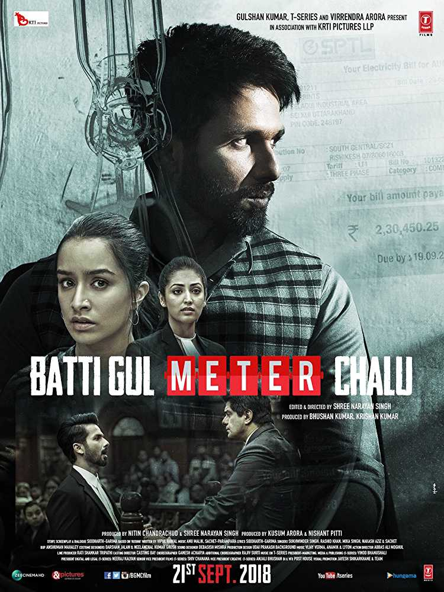

Batti Gul Meter Chalu
Language : Hindi
Release Date : Sep 21, 2018
Genre : Drama
All Ratings 5.5/10
5.5/10 6.9/10
6.9/10Grab Your Tickets Now Via Download/Listen To All Songs Official Social Media Accounts Similar Movie(s) That You Might Like 3/5

Jolly LLB 2

Pink
 3/5
3/5 2.5/5
2.5/5 2.5/5
2.5/5 2.5/5
2.5/5 1.5/5
1.5/5 Book Now
Book Now Book Now
Book Now Book Now
Book Now Book Now
Book Now Listen Now
Listen Now Listen Now
Listen Now Listen Now
Listen Now Connect Now
Connect NowDescription
Cast: Shahid Kapoor as Sushil Kumar Pant / S.K, Shraddha Kapoor as Lalita Nautiyal / Nauti, Divyendu Sharma as Sundar Mohan Tripathi, Yami Gautam, Samir Soni, Sudhir Pandey, Farida Jalal, Supriya Pilgaonkar, Atul Srivastava, Ashutosh Jha, Anna Ador
Director: Shree Narayan Singh
Plot
S.K (Shahid Kapoor), Nauti (Shraddha Kapoor), and Tripathi (Divyendu Sharma) are childhood friends. S.K is a hypocrite, mean lawyer making money from out of court settlements. Nauti is an over the top fashion designer who thinks highly of herself.
Things were breezy until Tripathi opens a small town Printing Press. Within months, he is charged with an Inflated elctricity bill of 1.5 Lakhs, which escalates to 54 Lakhs in the following months. With no where to go and complain, Tripathi commits suicide. S.K is set aback by the events and has a change of heart. He decides to fight out against SPTL , a Privatised Electricity Company responsible for the Inflated Bills. Whether or not he is able to sue the company forms the rest of the story.Source:Wikipedia
Reviews and News(After Release)
Shraddha Kapoor, Divyendu Sharma, director Shree Narayan Singh talk about Batti Gul Meter ChaluBy:Firstpost - 23 September,2018
Review of Reviews: Is Batti Gul Meter Chalu worth watching?By:Hindustan Times - 21 September,2018
Batti Gul Meter Chalu movie review: The Shahid Kapoor starrer is a film with good intentionsBy:The Indian Express - 21 September,2018
Batti Gul Meter Chalu Review: Shahid-Shraddha film is a dull and lengthy dramaBy:India Today - 21 September,2018
Batti Gul Meter Chalu: Shahid Kapoor and Shraddha Kapoor light up the big screenBy:Daily News & Analysis - 21 September,2018
Batti Gul Meter Chalu Preview: Shahid Kapoor's Fight For Justice BeginsBy:NDTV - 20 September,2018
With Batti Gul Meter Chalu audience will realise the gravity of the issue: Yami GautamBy:The Indian Express - 20 September,2018
News(Before Release)
Why Shahid's Batti Gul Meter Chalu trailer was an out-and-out disappointmentBy:India Today - 19 September,2018
Batti Gul Meter Chalu music review: Arijit, Anu Malik, Atif Aslam's combined might can't lift this forgettable albumBy:Firstpost - 19 September,2018
Shahid Kapoor: Films dealing with issues from heartland of the country reach out to a wider audienceBy:The Indian Express - 19 September,2018
Shahid Kapoor learnt the ropes of Kumaoni dialect for ‘Batti Gul Meter Chalu’By:Times of India - 18 September,2018
Batti Gul Meter Chalu: Not Length but Substance of a Role Matters to Me, Says Yami GautamBy:News18 - 14 September,2018
Shahid Kapoor opts out of Batti Gul Meter Chalu promotions owing to daughter's ill-health, says being parent is above all elseBy:Firstpost - 12 September,2018

Batti Gul Meter Chalu
Trailers And Others Videos